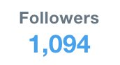

These are all the tweets and replies that @RadishHarmers made on 2018-1-20:
Id:
954535266806464512
Timestamp:
2018-1-20 at 2:5:16
In reply to user who no longer can be found (RIP).
In reply to tweet ID: 954332210928209920
Id:
954540691467616257
Timestamp:
2018-1-20 at 2:26:50
In reply to user:
@sheckyyoungman
In reply to tweet ID:
954539088329170944
Id:
954560123837366272
Timestamp:
2018-1-20 at 3:44:3
Id:
954630708047130626
Timestamp:
2018-1-20 at 8:24:31
Id:
954633560761155584
Timestamp:
2018-1-20 at 8:35:51
Id:
954767447638159360
Timestamp:
2018-1-20 at 17:27:52
Id:
954772906516480000
Timestamp:
2018-1-20 at 17:49:34
In reply to user:
@portmanteauwar
In reply to tweet ID:
954771231387000832
Id:
954779436812992512
Timestamp:
2018-1-20 at 18:15:31
Id:
954784104364392449
Timestamp:
2018-1-20 at 18:34:4
Id:
954812958797737984
Timestamp:
2018-1-20 at 20:28:43
Id:
954840483108237312
Timestamp:
2018-1-20 at 22:18:5
Containing photo:

Id:
954855098722611200
Timestamp:
2018-1-20 at 23:16:10
Id:
954856272209170433
Timestamp:
2018-1-20 at 23:20:50
Id:
954860915832250368
Timestamp:
2018-1-20 at 23:39:17
Id:
954864311708434433
Timestamp:
2018-1-20 at 23:52:47
In reply to user:
@BagelSmalls
In reply to tweet ID:
954864230116839424